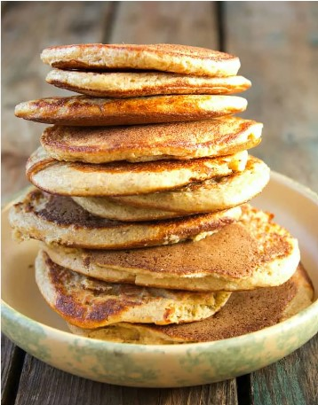

Oatmeal Pancakes

Description
Oatmeal pancakes are a healthy breakfast option that can be made by
mixing oats, flour, baking powder, eggs, and milk. Cook in a non-stick
pan until golden brown, then serve with toppings of your choice.
Oatmeal pancakes can be made healthier by using whole wheat or almond flour,
adding ingredients like cinnamon or mashed bananas, or using almond milk and
flax eggs for a vegan option. They are a good source of fiber and protein to
keep you full and satisfied.
Ingredients
- 1 cup of rolled oats
- 1 cup of all-purpose flour
- 1 teaspoon of salt
- 1/2 tablespoons of salt
- 2 tablespoons of sugar
- 2 eggs
- 1 1/2 cups of milk
- 2 tablespoons of melted butter or oil
Steps
- In a mixing bowl, combine 1 cup of rolled oats, 1 cup of all-purpose flour,
1 tablespoon of baking powder, 1/2 teaspoon of salt, and 2 tablespoons of
sugar
- In a separate bowl, beat 2 eggs and then add 1 1/2 cups of milk and 2
tablespoons of melted butter or oil
- Add the wet ingredients to the dry ingredients and mix until just combined.
Do not overmix
- Heat a non-stick pan or griddle over medium high heat
- Scoop about 1/4 cup of butter for each pancake onto the hot pan
- Cook the pancake until bubbles form on the surface, then flip and cook for
an additional 1-2 minutes until golden brown
- Repeat with the remainig batter
- Serve the oatmeal pancakes warm with your favorit toppings such as fresh fruit,
syrup, or whipped cream